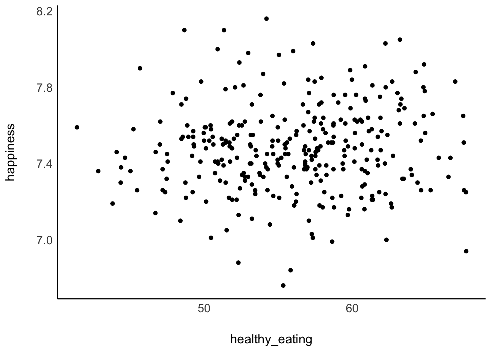
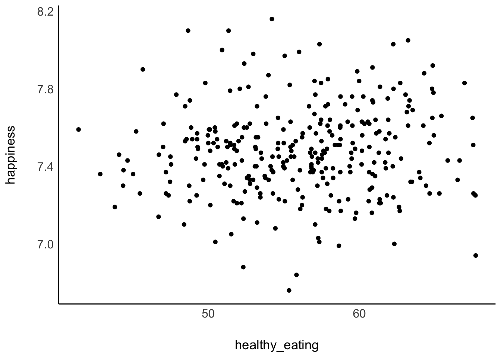
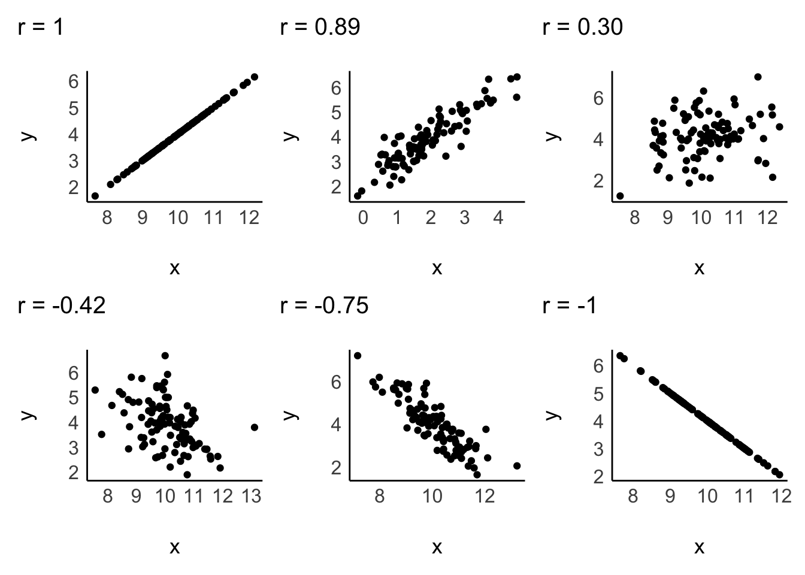
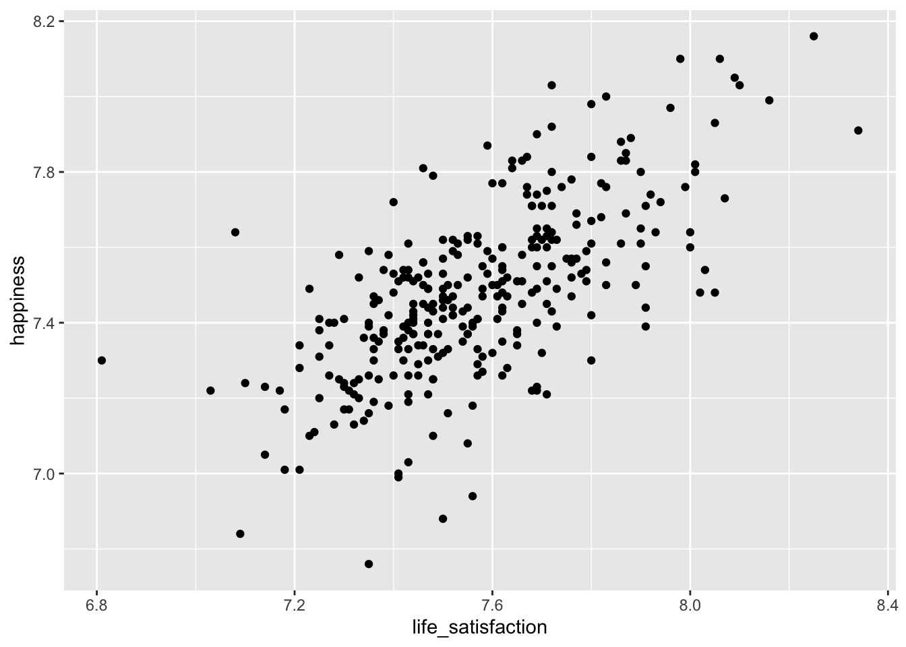
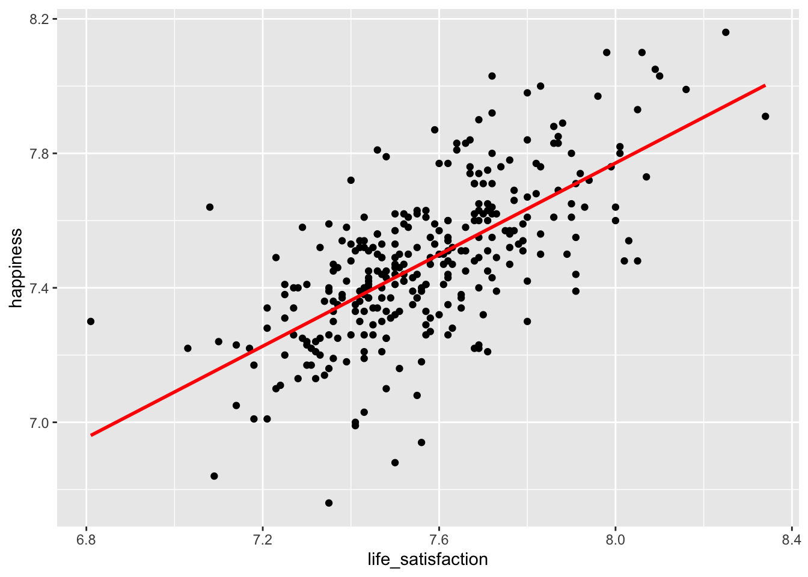
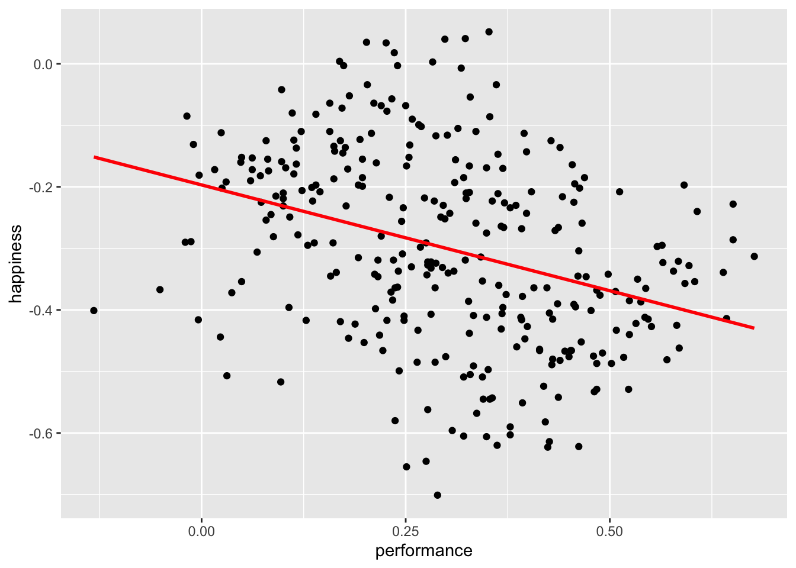
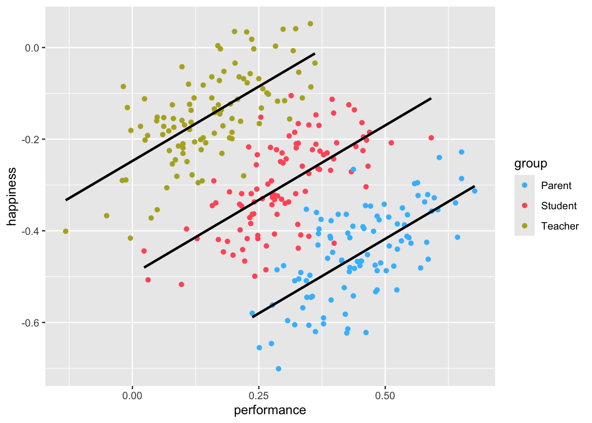

hie_2021 |>
ggplot(aes(healthy_eating, happiness)) +
geom_point() +
see::theme_modern()
Sometimes, counting and measuring means, medians, and standard deviations is not enough because they are all based on a single variable. Instead, we might have questions about the relationship between two or more variables. In this section, we will explore how correlations can (and kind of cannot - see Section 10.4.3) provide insights into the following questions:
Do people who eat healthier also feel happier?
Are happier people also more satisfied with their life?
Is eating healthier related to other health factors, such as life expectancy, blood pressure and overweight/obesity?
There are many different ways to compute the correlation, and it partially depends on the type of data you want to relate to each other. The ‘Pearson’s correlation’ is by far the most frequently used correlation technique for normally distributed data. On the other hand, if data is not normally distributed, we can opt for the ‘Spearman’s rank’ correlation. One could argue that the relationship between these two correlations is like the mean (Pearson) to the median (Spearman). Both approaches require numeric values to be computed correctly. If our data is ordinal or, worse, dichotomous (like a logical variable), we have to choose different options. Table 10.1 summarises different methods depending on the data type.
| Correlation | Used when … |
|---|---|
| Pearson | … variables are numeric and parametric |
| Spearman | … variables are numeric and non-parametric |
| Polychoric | … investigating two ordinal variables |
| Tetrachoric | … both variables are dichotomous, e.g. ‘yes/no’, ‘True/False’. |
| Rank-biserial | … one variable is dichotomous and the other variable is ordinal |
There are many more variations of correlations, which you can explore on the package’s website we will use in this chapter: correlation. However, we will primarily focus on Pearson and Spearman because they are the most commonly used correlation types in academic publications to understand the relationship between two variables. In addition, we also look at ‘partial correlations’, which allow us to introduce a third variable into this mix.
Since correlations only show the relationship between two variables, we can easily put one variable on the x-axis and one on the y-axis, creating a so-called ‘scatterplot’. We used two functions to plot scatterplots before, i.e. geom_point() and geom_jitter. Let’s explore our first research question: Do people who eat healthier also feel happier? One assumption might be that healthier eating habits contribute to better physical well-being, which in turn enhances happiness. However, a counter-argument could be that diet does not significantly impact happiness levels, as everyone is subject to various life circumstances that influence our mood. Either way, we first need to identify the two variables of interest, which we can find in the hie_2021 dataset. It contains measures of national health in various areas of England collected in 2021, such as:
happiness, which measures the average happiness of respondents when asked how they felt the day before on a scale from 0 (not at all) to 10 (completely), and
healthy_eating, which represents the percentage of adults who report eating five or more portions of fruit and vegetables on a regular day.
hie_2021 |>
ggplot(aes(healthy_eating, happiness)) +
geom_point() +
see::theme_modern()
The results from our scatterplot are, well, somewhat random. We can see that in some areas of England people report very high happiness scores as well as high levels of healthy_eating. However, some regions score high on happiness but low regarding healthy_eating. Overall, the points look like they are randomly scattered all over our canvas. The only visible pattern we can notice is that there are slightly more scores at the center of this cloud of dots than on its edges.
Since correlations only explain linear relationships, a perfect correlation would be represented by a straight line. Consider the following examples of correlations:

A correlation can be either positive or negative, and its value (i.e. r in case of the Pearson correlation) can range from -1 to 1:
-1 defines a perfectly negative correlation,
0 defines no correlation (completely random), and
1 defines a perfectly positive correlation.
In other words, the further the score is away from 0, the stronger is the relationship between variables. We also have benchmarks that we can use to assess the strength of a relationship, for example, the one by Cohen (1988). The strength of the relationship is also called ‘effect size’. Table 10.2 shows the relevant benchmarks. Note that effect sizes are always provided as absolute figures. Therefore, -0.4 would also count as a moderate relationship.
| effect size | interpretation |
|---|---|
| r < 0.1 | very small |
| 0.1 \(\leq\) r < 0.3 | small |
| 0.3 \(\leq\) r < 0.5 | moderate |
| r \(\geq\) 0.5 | large |
If we compare the plot from our data with the sample plots, we can conclude that the relationship is weak, and therefore the r must be close to zero. We can test this with the Pearson correlation using the function correlation() from the correlation package. By default, it will perform a Pearson correlation, which is only applicable for parametric data. As outlined before, if our data violates the assumptions for parametric tests, we can use Spearman’s correlation instead. For the rest of the chapter, we assume that our data is parametric, but I will demonstrate how to compute both in the following code chunk:
library(correlation)
# Pearson correlation
hie_2021 |>
select(happiness, healthy_eating) |>
correlation()# Correlation Matrix (pearson-method)
Parameter1 | Parameter2 | r | 95% CI | t(305) | p
-------------------------------------------------------------------
happiness | healthy_eating | 0.07 | [-0.04, 0.18] | 1.24 | 0.215
p-value adjustment method: Holm (1979)
Observations: 307# Spearman correlation
hie_2021 |>
select(happiness, healthy_eating) |>
correlation(method = "spearman")# Correlation Matrix (spearman-method)
Parameter1 | Parameter2 | rho | 95% CI | S | p
---------------------------------------------------------------------
happiness | healthy_eating | 0.09 | [-0.03, 0.20] | 4.41e+06 | 0.135
p-value adjustment method: Holm (1979)
Observations: 307Indeed, our analysis reveals that the effect size is very small (r = 0.07 < 0.1). Therefore, healthy_eating, seems to not make us happier. In all fairness, the foods that make us smile are often not fruits and veggies, but other, more guilty, pleasures.
Another question we posed at the beginning was: Are people who are happier also more satisfied with their life? Our intuition might say ‘yes’. A person who consistently feels happy is more likely to assess their overall life positively, because their day-to-day experiences are enjoyable. Let’s create another scatterplot to find out.
hie_2021 |>
ggplot(aes(x = life_satisfaction, y = happiness)) +
geom_point()
The scatterplot shows a somewhat positive trend which suggests that we are right: Higher happiness is linked to higher life_satisfaction. Often, it can be tough to see the trend. To improve our plot, we can use the function geom_smooth(), which can help us draw a straight line that best fits our data points. We need to set the method for drawing the line to lm, which stands for ‘linear model’. Remember, correlations assume a linear relationship between two variables, i.e. we model a linear relationship in our scatterplot. As mentioned before, the stronger the relationship the closer each dot in the plot will be to the red line.
hie_2021 |>
ggplot(aes(x = life_satisfaction, y = happiness)) +
geom_point() +
geom_smooth(method = "lm",
formula = y ~ x,
se = FALSE,
col = "red")
To find a definitive answer to this research question we can compute the correlation for both variables.
hie_2021 |>
select(life_satisfaction, happiness) |>
correlation()# Correlation Matrix (pearson-method)
Parameter1 | Parameter2 | r | 95% CI | t(305) | p
-------------------------------------------------------------------------
life_satisfaction | happiness | 0.67 | [0.60, 0.73] | 15.73 | < .001***
p-value adjustment method: Holm (1979)
Observations: 307With an r of 0.67, we did not only find a positive relationship, but one that is considered large, according to Cohen (1988).
One of the most common pitfalls of novice statisticians is the interpretation of what counts as significant and not significant. Most basic tests offer a ‘p value’, which stands for ‘probability value’. I have referred to this value multiple times in this book already, but did not thoroughly explain why it is important.
To understand p-values and significance, we need to briefly discuss hypotheses. A hypothesis is an assumption we make about the data, such as whether healthy_eating leads to more happiness (as in Section 10.2). In contrast, the null hypothesis is a special type of hypothesis that assumes that no effect or relationship exists between variables, i.e. the opposite of what we are testing. When you read that a hypothesis has been “rejected” or “accepted,” it is often the null hypothesis being tested. The p-value helps determine whether we should reject or retain the null hypothesis based on the data.
The p-value can range from 1 (for 100%) to 0 (for 0%) and helps us assess whether to accept or reject the null hypothesis:
\(p = 1\), there is a 100% probability that the result is due to pure chance, supporting (accepting) the null hypothesis.
\(p = 0\), there is a 0% probability that the result is due to pure chance, suggesting that the null hypothesis has to be rejected.
Technically, we would not find that p is ever truly zero and instead denote very small p-values with p < 0.01 or even p < 0.001, indicating that our null hypothesis is unlikely to be true.
There are also commonly considered and accepted thresholds for the p-value:
\(p > 0.05\), the result is not significant.
\(p \leq 0.05\), the result is significant, i.e. there is less than a 5% chance that the null hypothesis should have been accepted.
\(p \leq 0.01\), the result is highly significant.
Most frequently, confusion about the p-value emerges because we test FOR the null hypothesis and not what we are actually interested in.Returning to our example of eating healthy and its impact on happiness, we would first formulate our hypothesis and the null hypothesis:
Hypothesis (\(H_1\)): Healthy eating and happiness are significantly positively related to each other.
Null Hypothesis (\(H_0\)): There is no significant relationship between healthy eating and happiness.
Based on our research question, we hope to accept our hypothesis and, therefore, reject the null hypothesis. Hardly ever will you find that researchers are interested in not finding relationships/effects in their data. Consequently, a significant p-value would tell us to reject the null hypothesis and accept our hypothesis.
Let’s revisit the results from our earlier analysis where we performed a Pearson correlation to test our assumption.
# Pearson correlation
hie_2021 |>
select(happiness, healthy_eating) |>
correlation()# Correlation Matrix (pearson-method)
Parameter1 | Parameter2 | r | 95% CI | t(305) | p
-------------------------------------------------------------------
happiness | healthy_eating | 0.07 | [-0.04, 0.18] | 1.24 | 0.215
p-value adjustment method: Holm (1979)
Observations: 307Besides the correlation coefficient (r), we also find \(t_{(305)} = 1.24\), which is the test statistic. The test statistic helps us determine if our data shows something unusual based on our hypothesis. A test statistic close to 0 suggests that our data is consistent with the null hypothesis, i.e. no effect/relationship. The further the test statistic moves from 0, the more evidence we have against the null hypothesis.
In our analysis of the relationship between happiness and healthy_eating, we obtained a p-value of 0.215. This indicates that there is a 21.5% probability of finding a t-value of 1.24 or or larger if the null hypothesis is true. You probably agree that these are not good odds. Since this p-value is greater than the conventional significance level of \(p \leq 0.05\) we do not reject the null hypothesis. This means we do not have sufficient evidence to conclude that a significant relationship exists between happiness and healthy_eating.
Lastly, I also want to visually explain what the test statistic is and how it relates to p-values. We already learned about the normal distribution, as such, the visualisation in Figure 10.1 will look familiar.
What we can see here is the distribution of test statistic scores (t-values) related to our correlation analysis. We can see that all t-values that fall within the blue area of the distribution would not count as significantly different from the null hypothesis, which means we have to accept that there is no effect/relationship to be found. However, if the t-value falls into one of the two red areas, we can reject the null hypothesis and be excited that the effect/relationship we found is significant.
While we clarified how the t-value is related to the p-value, you might still be confused how these two values relate to the correlation coefficient (r) in our correlation results. The answer is fairly simple: we need r to compute our t-value. The mathematical formula is as follows:
\[ t = \frac{r \sqrt{n - 2}}{\sqrt{1 - r^2}} \]
With this knowledge, we can reproduce \(t_{(305)} = 1.24\) writing the following lines of code:
# Define the correlation coefficient and sample size
r <- 0.07099542 # not rounded
n <- 307
# Calculate the t-value
t_value <- (r * sqrt(n - 2)) / sqrt(1 - r^2)
t_value[1] 1.243018We will cover more about the p-value in Chapter 11 and Chapter 13. For now, it is important to know that a significant correlation is one that we should look at more closely. Usually, correlations that are not significant suffer from small effect sizes. However, different samples can lead to different effect sizes and significance levels. Consider the following examples:
# Correlation Matrix (pearson-method)
Parameter1 | Parameter2 | r | 95% CI | t(2) | p
-------------------------------------------------------------
x | y | 0.77 | [-0.73, 0.99] | 1.73 | 0.225
p-value adjustment method: Holm (1979)
Observations: 4# Correlation Matrix (pearson-method)
Parameter1 | Parameter2 | r | 95% CI | t(10) | p
---------------------------------------------------------------
x | y | 0.77 | [0.36, 0.93] | 3.87 | 0.003**
p-value adjustment method: Holm (1979)
Observations: 12In both examples \(r = 0.77\), but the sample sizes are different (4 vs 12), and the p-values differ. In the first example, \(p = 0.225\), which means the relationship is not significant, while in the second example, we find that \(p < 0.01\) and is, therefore, highly significant. As a general rule, the bigger the sample, the more likely we find significant results, even though the effect size is small. Therefore, it is crucial to interpret correlations based on at least three factors:
the p-value, i.e. significance level,
the r-value, i.e. the effect size, and
the n, i.e. the sample size
The interplay of all three can help determine whether a relationship is important. Therefore, when we include correlation tables in publications, we have to provide information about all three indicators.
Let’s put all this information into practice and investigate our third research question, which asks whether eating healthy relates to other health factors such as life expectancy, blood pressure and overweight/obesity. While we could compute three correlations independently to find an answer to our question, it is much more common to include multiple variables simultaneously and look at the results conjointly.
hie_2021 |>
select(healthy_eating, life_expectancy, high_blood_pressure, overweight_and_obesity_in_adults) |>
correlation()# Correlation Matrix (pearson-method)
Parameter1 | Parameter2 | r | 95% CI | t(305) | p
----------------------------------------------------------------------------------------------------
healthy_eating | life_expectancy | 0.70 | [ 0.64, 0.75] | 17.14 | < .001***
healthy_eating | high_blood_pressure | -0.05 | [-0.16, 0.06] | -0.85 | 0.395
healthy_eating | overweight_and_obesity_in_adults | -0.45 | [-0.54, -0.36] | -8.85 | < .001***
life_expectancy | high_blood_pressure | -0.08 | [-0.19, 0.03] | -1.45 | 0.295
life_expectancy | overweight_and_obesity_in_adults | -0.56 | [-0.63, -0.48] | -11.81 | < .001***
high_blood_pressure | overweight_and_obesity_in_adults | 0.10 | [-0.01, 0.21] | 1.76 | 0.237
p-value adjustment method: Holm (1979)
Observations: 307If you have seen correlation tables before, you might find that correlation() does not produce the classic table by default. If you want it to look like the tables in publications, which are more compact but offer less information, you can use the function summary(). Which one you use it entirely up to you (or your supervisor).
hie_2021 |>
select(healthy_eating, life_expectancy, high_blood_pressure, overweight_and_obesity_in_adults) |>
correlation() |>
summary()# Correlation Matrix (pearson-method)
Parameter | overweight_and_obesity_in_adults | high_blood_pressure | life_expectancy
----------------------------------------------------------------------------------------------
healthy_eating | -0.45*** | -0.05 | 0.70***
life_expectancy | -0.56*** | -0.08 |
high_blood_pressure | 0.10 | |
p-value adjustment method: Holm (1979)This table provides a clear answer to our final question. While healthy_eating positively relates to life_expectancy (\(r = 0.70\), \(p <0.001\)) and negatively to overweight_and_obesity_in_adults (\(r = -0.45\), \(p <0.001\)), it does not correlate with high_blood_pressure (\(r = 0.05\), \(p <0.395\)). In the classic correlation table, you often see *. These stand for the different significant levels:
*, i.e. \(p < 0.05\)
**, i.e. \(p < 0.01\)
***, i.e. \(p < 0.001\) (you might find some do not use this as a separate level)
In short, the more * there are attached to each value, the more significant a result. Therefore, we likely find the same relationships in newly collected data if there are many * and we can trust our findings.
Correlations are helpful, but only to some extend. The three most common limitations you should be aware of are:
Correlations are not causal relationships
Correlations can be spurious
Correlations might only appear in sub-samples of your data
Correlations do not offer insights into causality, i.e. whether a change in one variable causes change in the other variable. Correlations only provide insights into whether these two variables tend to change when one of them changes. Still, sometimes we can infer such causality by the nature of the variables. For example, in countries with heavy rain, more umbrellas are sold. Buying more umbrellas will not cause more rain, but if there is more rain in a country, we rightly assume a higher demand for umbrellas. If we can theorise the relationship between variables, we would rather opt for a regression model instead of a correlation (see Chapter 13).
Just because we find a relationship between two variables does not necessarily mean that they are truly related. Instead, it might be possible that a third variable is the reason for the relationship. We call relationships between variables that are caused by a third variable ‘spurious correlations’. This third variable can either be part of our dataset or even something we have not measured at all. The latter case would make it impossible to investigate the relationship further. However, we can always test whether some of our variables affect the relationship between the two variables of interest. This can be done by using partial correlations. A partial correlation returns the relationship between two variables minus the relationship to a third variable. Figure 10.2 depicts this visually. While a and b appear to be correlated, the correlation might only exist because they correlate with x.
Let’s return to our first research questions. We found that healthy_eating is not related to happiness, but to life_satisfaction. Life_satisfaction, however, is related to happiness.
# Correlation between variables
hie_2021 |>
select(healthy_eating, happiness, life_satisfaction) |>
correlation()# Correlation Matrix (pearson-method)
Parameter1 | Parameter2 | r | 95% CI | t(305) | p
------------------------------------------------------------------------------
healthy_eating | happiness | 0.07 | [-0.04, 0.18] | 1.24 | 0.215
healthy_eating | life_satisfaction | 0.23 | [ 0.12, 0.33] | 4.05 | < .001***
happiness | life_satisfaction | 0.67 | [ 0.60, 0.73] | 15.73 | < .001***
p-value adjustment method: Holm (1979)
Observations: 307However, if we consider the impact of life_satisfaction on the relationship between heathly_eating and happiness when we compute the correlation, we retrieve a very different result.
# Correlation between variables, considering partial correlations
hie_2021 |>
select(healthy_eating, happiness, life_satisfaction) |>
correlation(partial = TRUE)# Correlation Matrix (pearson-method)
Parameter1 | Parameter2 | r | 95% CI | t(305) | p
-------------------------------------------------------------------------------
healthy_eating | happiness | -0.11 | [-0.22, 0.00] | -1.95 | 0.053
healthy_eating | life_satisfaction | 0.24 | [ 0.13, 0.34] | 4.33 | < .001***
happiness | life_satisfaction | 0.67 | [ 0.61, 0.73] | 15.86 | < .001***
p-value adjustment method: Holm (1979)
Observations: 307Suddenly, eating_healthy and happiness show a slight negative correlation (\(r = -0.11\)). In other words, by controlling for the effect of life_satisfaction on both variables, we reversed the relationship from positive to negative. You might wonder whether this implies that eating healthily makes us less happy. If we were to take this result superficiously, it would indicate exactly this. However, as mentioned before, when we look at correlations we have to consider not only r but also the p-value and the sample size. While sample size seems less problematic (\(n = 307\)), the p-value is only \(p = 0.053\), which is just shy of the required minimum significance level of 0.05. If we strictly applied the rules, this relationship would not be classified as ‘significant’. Thus, the relationship would not be strong enough to derive meaningful conclusions. Even if the p-value were slightly lower, the effect size would still be very small.
The final limitation is so important that it even has its own name: the ‘Simpson’s Paradox’. Let’s find out what is so paradoxical about some correlations. For this demonstration, we have to make use of a different dataset: simpson of the r4np package. It contains information about changes in student performance and changes in happiness. The dataset includes responses from three different groups: Teachers, Students and Parents.
We would assume that an increase in students’ performance will likely increase the happiness of participants. After all, all three have stakes in students’ performance.
simpson |>
ggplot(aes(x = performance,
y = happiness)) +
geom_point() +
geom_smooth(method = "lm",
formula = y ~ x,
se = FALSE,
color = "red")
simpson |>
select(performance, happiness) |>
correlation()# Correlation Matrix (pearson-method)
Parameter1 | Parameter2 | r | 95% CI | t(298) | p
----------------------------------------------------------------------
performance | happiness | -0.34 | [-0.44, -0.24] | -6.32 | < .001***
p-value adjustment method: Holm (1979)
Observations: 300It appears we were terribly wrong. It seems as if performance and happiness are moderately negatively correlated with each other. Thus, the more a student improves their performance, the less happy teachers, parents, and students are. I hope you agree that this is quite counter-intuitive. However, what could be the cause for such a finding?
If you have the instincts of a true detective, you would think that maybe we should look at each group of participants separately. So, let’s plot the same scatterplot again but colour the responses of each participant group differently and also compute the correlation for each subset of our data.
simpson |>
ggplot(aes(x = performance,
y = happiness,
group = group,
col = group)) +
geom_point() +
geom_smooth(method = "lm",
formula = y ~ x,
se = FALSE,
col = "black") +
# Choose custom colours for the dots
scale_color_manual(values = c("#42BDFF", "#FF5C67", "#B3AF25"))
simpson |>
group_by(group) |>
correlation()# Correlation Matrix (pearson-method)
Group | Parameter1 | Parameter2 | r | 95% CI | t(98) | p
----------------------------------------------------------------------------
Parent | performance | happiness | 0.65 | [0.52, 0.75] | 8.47 | < .001***
Student | performance | happiness | 0.65 | [0.52, 0.75] | 8.47 | < .001***
Teacher | performance | happiness | 0.65 | [0.52, 0.75] | 8.47 | < .001***
p-value adjustment method: Holm (1979)
Observations: 100The results have magically been inverted. Instead of a negative correlation, we now find a strong positive correlation among all groups. This result seems to make much more sense.
When computing correlations, we need to be aware that subsets of our data might show different directions of correlations. Sometimes insignificant correlations might suddenly become significant. This is what the Simpson’s paradox postulates.
If your study relies solely on correlations to detect relationships between variables, which it hopefully does not, it is essential to investigate whether the detected (or undetected) correlations exist. Of course, such an investigation can only be based on the data you obtained. The rest remains pure speculation. Nevertheless, correlations are beneficial to review the bilateral relationship of your variables. It is often used as a pre-test for regressions (see Chapter 13) and similarly more advanced computations. As a technique to make inferences, correlations are a good starting point but should be complemented by other steps, if possible.